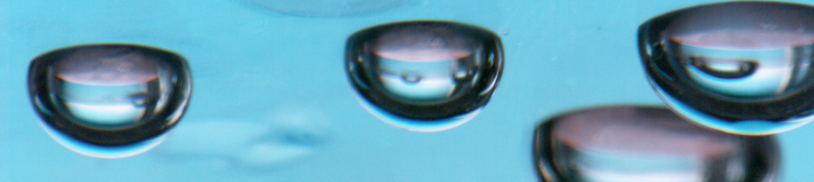
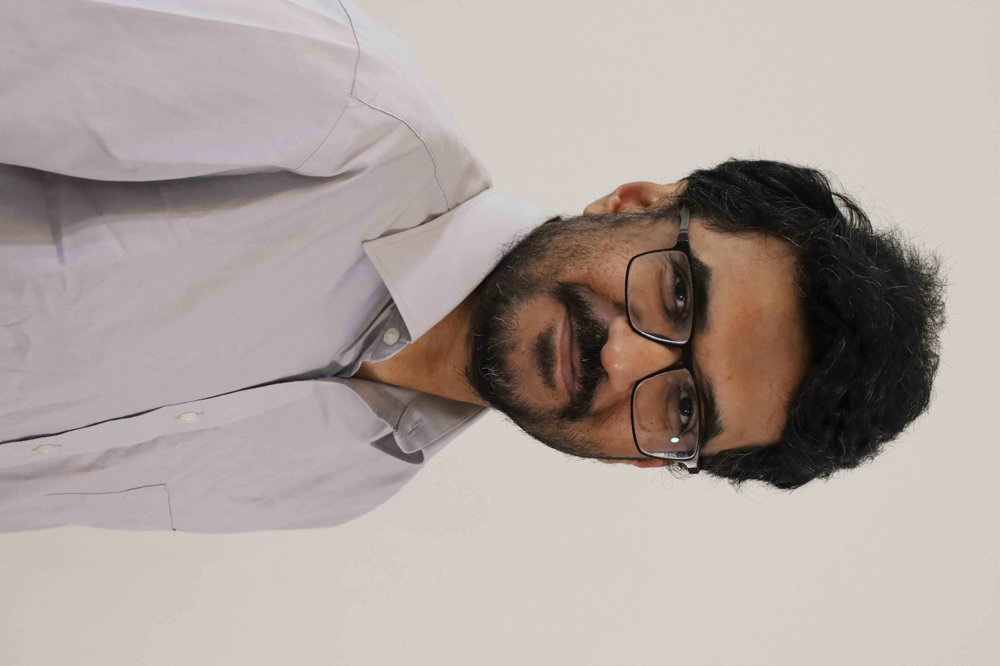
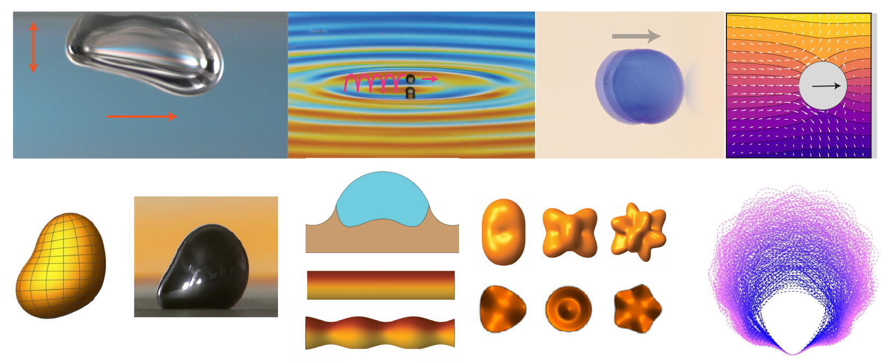

I am a researcher and educator with a deep curiosity about the physical science of interfacial fluid dynamics, transport phenomena, and soft and active matter. I seek out fundamental research problems in these areas that can broaden our understanding of complex systems across wide-ranging engineering and environmental processes.
